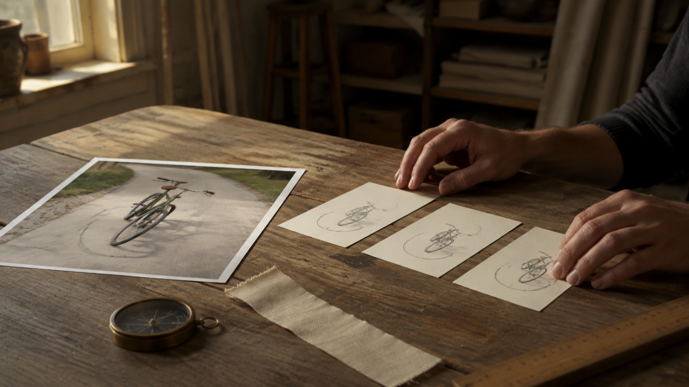

MiniMax H3 Image-to-Video Prompt Checklist for Reference-Led Action
A reference image can give a creative brief a concrete starting point: a particular object, setting, arrangement, or person is already visible. The hard part is deciding what you want to happen next without silently turning your wish list into a promise. A useful pre-generation plan names one observable action, separates the details you want to keep in view from the details that may change, and leaves room to inspect the result honestly afterward.
That is the purpose of this checklist. It is a writing and planning aid for a reference-image-led action. It does not describe an endpoint control, predict consistency, or report a tested output. The current FLAQ MiniMax H3 Image-to-Video page uses the product terms “MiniMax H3” and “Image to Video”; this article uses those terms only to keep the reader context clear.
Disclosure: I am the founder of FLAQ. This article introduces our MiniMax H3 image-to-video service and prompt resources. It does not report independent output testing.

Lead image: a physical reference and a small motion plan make the distinction between what is visible now and what is intended next easier to discuss.
Begin with what the reference actually shows
Before writing anything, look at the source image as if you were handing it to a collaborator who cannot infer your intent. Identify the subject, its position in the frame, nearby objects, the setting, the light, and the relationships that are visible. This is not a request to catalogue every detail. It is a way to avoid adding assumptions that are not present in the image.
Then choose one action that can be recognized in ordinary language. “The bicycle begins a gentle turn” is easier to check later than “make the scene dynamic.” “The cup moves toward the window” is more useful than “create elegant motion.” One action gives the brief a center of gravity. It also makes it easier to say what should remain visually coherent while that action unfolds.
The word continuity needs the same restraint. Here it means a desired relationship you want to describe before generation—for example, the same object placement, a stable garment color, or an unchanged room layout. It is not a claim that a service exposes a continuity setting or that the result will preserve any of those things.
Use the checklist before you generate
The following questions are deliberately modest. They help a reader prepare a clear brief, but they do not turn the brief into a technical guarantee.
1. What is the single visible action?
Write one subject and one change: a hand lifts a lid, a cyclist turns, a curtain moves in a breeze, or a person steps toward a doorway. Avoid stacking several unrelated events into the same request. When a scene contains a lot of activity, select the action that matters most to the viewer and leave secondary motion out unless it is necessary to understand that action.
This is not “prompt anatomy.” You do not need a universal formula for every image. You only need enough specificity to tell another reader what they should be able to observe if the action is represented.
2. Which visible details matter to the action?
List the few features that make the action legible. For a bicycle turn, that could be the rider’s direction, the bicycle’s orientation, and the curve of the path. For a cup moving across a table, it could be the cup, the tabletop, and the hand that initiates the movement. Keep the list tied to the scene rather than adding general-purpose phrases such as “perfect detail” or “cinematic quality.”
The goal is not to demand more from a tool. It is to prevent the brief from contradicting its own starting image. If an element is not visible and not relevant to the action, it usually does not belong on the checklist.
Middle image: a single object, one movement, and a small set of fixed visual relationships illustrate the scale of a useful pre-generation check.
3. What do you want to stay visually coherent?
Choose only the constraints that serve the action. A short list might say that the subject remains the same subject, a distinct object remains in place, the room layout does not change, or the direction of movement stays understandable. Phrase these as desired visual checks, not as provider controls: “keep the cup and table relationship easy to follow” is a planning note; “lock the cup perfectly” makes a promise this checklist cannot support.
It helps to distinguish a constraint from an outcome. A constraint is what you ask the brief to preserve in the reader’s mental picture. An outcome is what you later inspect in an actual result. Keeping those separate prevents a planning document from pretending it has already verified anything.
4. Where should the action arrive, if anywhere?
Some actions need an end state to make sense. A door may finish partly open; a bicycle may complete the visible turn; a hand may set an object down. State a simple, observable destination when it helps the scene read clearly. Do not invent an elaborate sequence just to sound precise. The question is not how many beats you can write; it is whether a viewer could recognize the intended change from the starting image.
If there is no meaningful end state, say so. A curtain swaying, a candle flickering, or a person pausing can remain a small, contained action. Clear limits are often more useful than an overfilled instruction.
5. What must you not claim?
Finish with a boundary check. Remove statements that imply a guaranteed identity match, exact continuity, a provider feature you have not confirmed, or a result you have not inspected. Do not turn a reference image into proof that a future output will be stable. This last question protects the reader as much as the rest of the checklist: it leaves the difference between a well-formed request and an observed result visible.
Keep provider pages and prompt resources separate
It is tempting to collect every related term into one description, especially when a repository discusses rich prompt-planning ideas. The supplied MiniMax H3 prompt repository can be useful as a separate resource for thinking about creative briefs. Its repository material is not evidence that a FLAQ image-to-video page exposes the same concepts as inputs, modes, or controls.
The present task is deliberately narrow: plan an action from a single reference image and write down the desired visual relationships without calling them controls.
Make a short desk-side pass
Before you generate, read the plan once as a viewer rather than as its author:
- Can I point to the subject and the starting state in the reference image?
- Is there one main action that a viewer could recognize?
- Did I keep only the visual relationships that matter to that action?
- Did I describe desired coherence without presenting it as a setting or guarantee?
- Would I know what to inspect afterward, without claiming the inspection has already happened?
If the answer to any question is no, simplify. A shorter plan with one clear action and a few relevant constraints is easier to review than a large block of instructions that tries to pre-solve every possible problem.
Closing image: finishing the plan is not the same as proving an outcome; the actual result still needs its own careful review.
Plan clearly, then inspect honestly
A reference-led action benefits from a small amount of discipline before generation: observe what is already there, choose one visible change, name the relationships that matter, and avoid promises you cannot support. That is enough to make a request more intelligible without confusing planning language with product controls or independent testing.
Use the checklist to make your intent easier to communicate. Treat the generated result, if you create one, as a separate thing to examine on its own evidence.